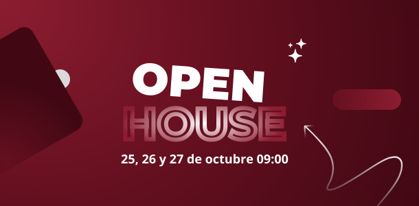
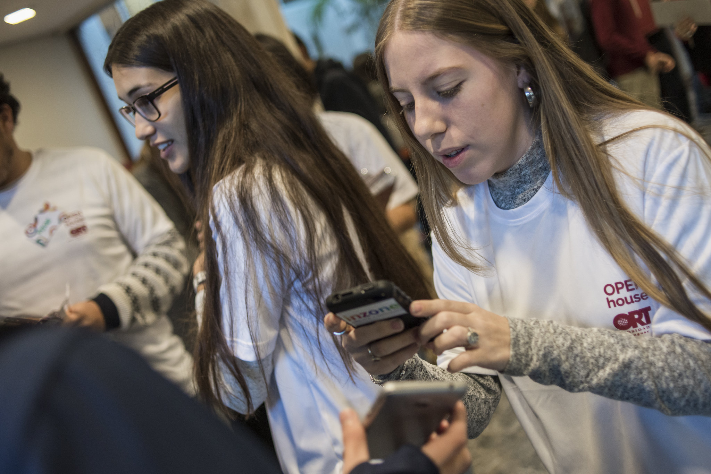

|  |
Estimado/a estudiante,Explora tu futuro en el Open House de ORT y da el primer paso.¿Ya estás pensando en qué carrera seguir y cómo empezar a construir tu futuro profesional?Si estás cursando 4.°, 5.° o 6° de secundaria , el Open House de ORT es una herramienta pensada para ayudarte a conocer las diferentes oportunidades que existen para tu futuro laboral. Graduados, estudiantes avanzados, docentes y coordinadores académicos te contarán de primera mano en qué consiste cada carrera, su metodología de estudio y su salida laboral. Más información aquí  |

|